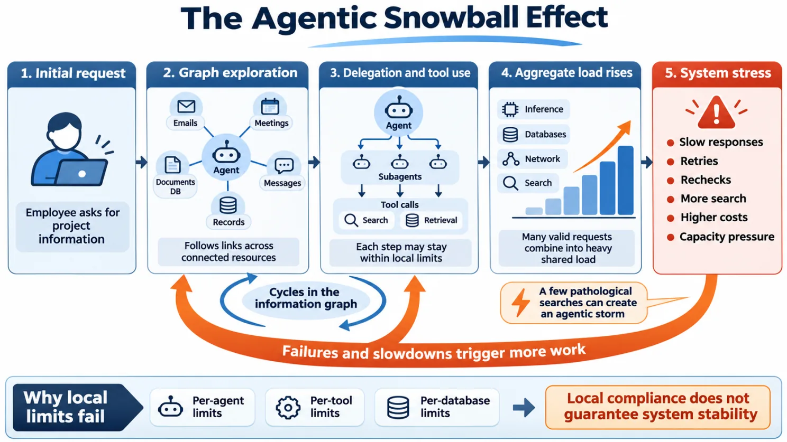

Just because you give agents limits doesn't mean your system will stay stable
Companies deploying agents to work across their enterprise domain need to consider more than just per-agent limits. In large autonomous systems, agents that trigger other agents that trigger tools can result in a cascading breakdown of cost and load controls. Companies need to consider this before their agents take down their systems or exhaust their budgets.
One Search Can Lead to Hundreds More
Imagine an employee looking for information on a project. The search finds an initial set of emails, then links to a set of meetings that lead to documents in a database, which lead to another set of documents and even back to emails.
At each point, each branch in this decision may have a limit on how many links to explore and how many tools to call. But that doesn't mean the overall load is limited, except perhaps through a very large ceiling on total calls.
The agent isn't failing here. It is doing exactly what it was asked to do, which is an extensive search to respond to an employee. It is not violating any policies or rules. It may be accessing only the information it has access to, but that action can lead to an overload of the system. And when combined with many different users, it may result in large tenant-wide degradation of service and an unexpected jump in inference costs.
Agents exploring enterprise data may encounter cycles and many-to-many connections that an agent cannot see other than through navigation and the execution of expensive inference and tool calls.
This is a known problem. In When Agents Do Not Stop, researchers identified 68 agent-loop failures across 47 software projects. Other experiments show that tool calls, even when reasonable on their own, can drive up costs and runtime under the policies the agents have been asked to follow.
When Load Creates More Load
The other issue is that as the load on the system increases, there's a chance of causing a cascading failure, such as retries and rechecks as overall system stability drops.
It is possible that agents, precisely because of limits and controls, as well as the sheer limitation on a system's ability to respond, may significantly worsen the outcome. They are trying to finish the work while repeatedly hitting the same system as it refuses to give them access.
Local Limits Do Not Protect the Whole System
The issue with per-user, per-app, per-tool, or per-database limits is that they do not consider the interaction and overall load on the system.
In typical queuing analysis, for example, for large compute clusters, I, as well as many others, have observed that jobs are not uniformly scheduled throughout the day, but tend to peak during the early morning workday hours as users come in.
And just a few searches for that lost email or document from the day before could be enough for a small number of jobs to occupy the full capacity of the system, preventing other users from accessing it.
When this occurs over a network between multiple locations, it can overload large portions of the system and result in significant degradation or even denial-of-service-like effects on the company's ability to serve other applications, including non-AI applications relying on the same networks and systems.
The Agentic Snowball

Similar problems have been observed in large mesh networks, including Zigbee, where many individually legitimate messages can create packet storms that overwhelm shared resources.
The result may be possible to observe in logs during a postmortem, but the issue with these cascading failures is that they can escalate extremely quickly.
Like a snowball rolling downhill and getting larger, by the time you're analyzing the logs and real-time dashboards, you may already be outside the normal operation of the system.
The kill switches themselves, which communicate with agents, may be fighting for network and computing availability to execute. And that's assuming those kill switches have already been set up.
There is already work on detecting cycles in agent behavior, including HashiCorp's cycle detection.
Designing for the Whole System
When companies design agentic workloads, they need to consider the overall system, understand where circuit breakers are required, what kind of detection of cycles and other bad behaviors is needed, and do a gradual rollout of agentic workflows, especially when agents are allowed to trigger other agents.
References
- Hou et al. (2026). When Agents Do Not Stop: Uncovering Infinite Agentic Loops in LLM Agents.
- Lee et al. (2026). Overthinking Loops in Agents: A Structural Risk via MCP Tools.
- HashiCorp. Consul Agentic Runtime Fabric: Cycle Detection.
For more articles exploring AI engineering, economics, security, and the emerging applications of AI, follow my LinkedIn newsletter or my website. Both links on my profile https://www.linkedin.com/in/yakov-shkolnikov/